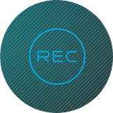

שירותי Prime Time
קארין,
ממיר הtovMemir שלך מאפשר להלקליט תכנים בו זמנית, להקליט באופן קבוע עוד שני ערוצים בשעות
ה- Prime time (בין 18:00 ל 24:00 ) או בשעות נבחרות אחרות
כל שצריך לעשות הוא להגדיר פעם אחת את שעות ההקלטה הרצויות והממיר
כבר יקליט את התכנים בעברוך, מדי יום
ביומו.
מפעילים את השירות ב-3 שלבים
1
ליחצה על הכפתור העגול בשלט

2
דפדפוף שמאלה בעזרת החצים
בשלט והבחירה האצמעות הכפתור
"Prime Time"
3
בלשונית "הגדרות מסך" ניתן
להגדיר את הערוצים המוקלטים
אוטומטית ושעות הקלטה
צופה בתוכנית מעניינת ורוצה להקליט תוך כדי צפייה?
לחיצה על כפתור הנקודה האדומה בשלט תפעיל את ההקלטה
לחיצה על הכפתור הירוק תקליט עבורך את כל הסדרה באופן אוטמטי
צופה בתוכנית מעניינת ורוצה להקליט תוך כדי צפייה?
לחיצה על כפתור הנקודה האדומה בשלט תפעיל את ההקלטה
לחיצה על הכפתור הירוק תקליט עבורך את כל הסדרה באופן אוטמטי

צופה בתוכנית מעניינת ורוצה להקליט תוך כדי צפייה?
לחיצה על כפתור הנקודה האדומה בשלט תפעיל את ההקלטה
לחיצה על הכפתור הירוק תקליט עבורך את כל הסדרה באופן אוטמטי